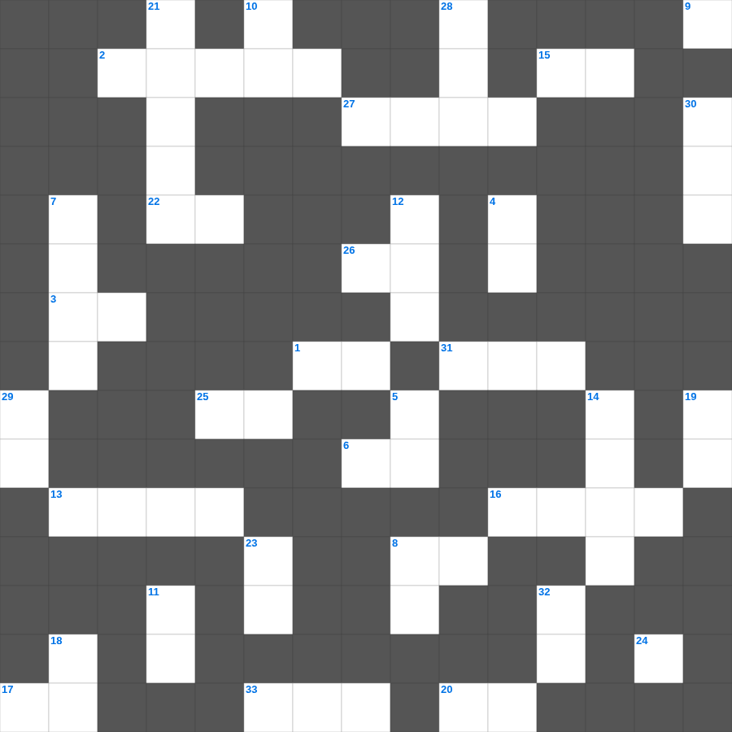

히브리서: 믿음의 장
📌 서비스 정의
십자가로세로는 교회 주보와 주일학교에서 사용할 수 있는 성경 기반 가로세로 퍼즐 서비스입니다. 성경 인물, 사건, 핵심 구절을 바탕으로 제작되었습니다. 온라인 풀이 및 인쇄 기능을 제공합니다.
무료로 즐기는 히브리서 히브리서 가로세로 퀴즈! 35개의 힌트로 구성된 가로세로 낱말 퍼즐입니다. PC와 모바일 모두 지원되며, 정답을 바로 확인할 수 있어 혼자서도 쉽게 풀 수 있습니다.

📝 가로 힌트
1. 여호수아가 기도할 때 멈춘 것
2. 주 앞에서 낮추라 그리하면 주께서 너희를 이것하시리라
3. 하나님이 세상을 이처럼 하사 독생자를 주셨으니
6. 하나님이 값없이 주시는 선물
8. 하나님을 믿고 죄를 씻어 영생을 얻는 일
13. 떡 다섯 개와 물고기 두 마리로 오천 명을 먹이심
15. 쓴 물이 단물로 변한 곳
16. 예수님이 가르쳐 주신 기도
17. 다윗이 연주하던 악기
20. 성령의 검은 곧 하나님의 이것
22. 성경의 맨 마지막 단어
25. 요셉이 형들에 의해 팔려간 나라
26. 요나가 다시스로 가기 위해 배를 탄 항구
27. 살아계신 하나님의 아들
31. 가장 큰 무게 단위(금 한 이것)
33. 예수님이 승천하신 산
📝 세로 힌트
3. 믿음 소망 사랑 중 제일은 이것
4. 세례를 주는 물의 영적 의미
5. 하나님을 경외하는 것이 이것의 근본
7. 성령님이 우리 곁에서 돕는 분이라는 뜻
8. 아기 예수님이 누우셨던 곳
9. 야곱이 베개로 삼았던 것
10. 하나님은 모든 사람이 구원을 받으며 이것을 아는 데 이르기를 원하시느니라
11. 예수님이 다시 오시는 일
12. 솔로몬이 성전 건축을 위해 백향목을 가져온 곳
14. 주님 가르쳐 주신 기도
18. 새 예루살렘 성의 길 재질
19. 영접하는 자 곧 그 이름을 믿는 자들에게는 하나님의 이것이 되는 권세를 주셨으니
21. 성도들 간의 사랑의 교제
23. 땅의 짐승과 기는 것(여섯째 날)
24. 모세가 반석을 치자 나온 것
28. 솔로몬 성전의 두 기둥 이름 중 다른 하나
29. 예배의 시작을 알리는 종소리나 기도
30. 요시야 왕이 성전 수리 중 발견한 것
32. 르호보암 왕 때 나라가 둘로 나뉨
🧑🏫 교회 교육 자료 활용
이 퍼즐은 주일학교 교재 추천 자료로 활용할 수 있고, 주일학교 주보에 넣기 좋은 분량으로 구성되어 있습니다. 수업용 주일학교 교안에 활동지로 붙이거나, 예배 후 복습용 주일학교 공과교재로 바로 사용할 수 있습니다.
🏷️ 키워드
히브리서 가로세로 퀴즈, 히브리서, 십자가로세로, 성경퀴즈, 말씀퀴즈, 가로세로퍼즐, 주일학교 교재 추천, 주일학교 주보, 주일학교 교안, 주일학교 공과교재